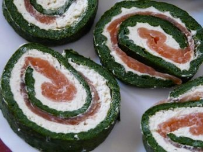

Roulé saumon épinards
Ingrédients
×
- 1 boîte d'épinards en branches
- 5 œufs
- sel
- poivre
- 1 boîte de Boursin
- 150 g de saumon fumé
- crème fraîche
- ail
- 1 citron
- ciboulette

Préparation
Étape 1
Bien égoutter 1 boîte d'épinards en branches et les battre en omelette avec 5 œufs, sel et poivre. Étaler sur une plaque à pâtisserie.
Étape 2
Cuire 15min au four.
Étape 3
À la sortie du four, tartiner 1 boîte de Boursin sur l’omelette chaude et recouvrir de 150 g de saumon fumé. Rouler tant que c’est chaud et laisser refroidir 2h au frais.
Étape 4
Sauce : mélanger de la crème fraîche avec de l’ail émincé, le jus d’1 citron, quelques brins de ciboulette, sel et poivre.
Résumé
1 boîte d'épinards en branches
5 œufs
sel
poivre
battre en omelette Étaler
Cuire
1 boîte de Boursin
150 g de saumon fumé
tartiner Rouler laisser refroidir 2h
crème fraîche
ail
1 citron
ciboulette
mélanger